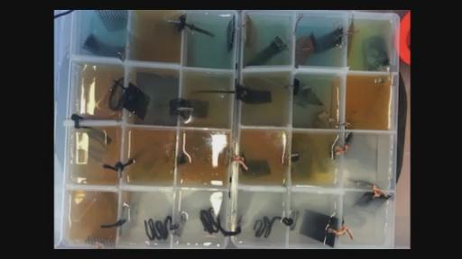
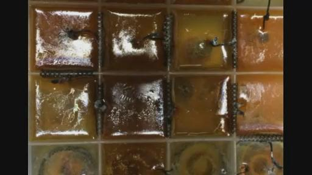
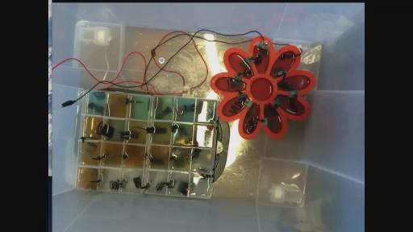

ITEEDU
2014-06-05太空学院第十三次教学
创建时间：2014-6-5 21:52 修改时间：2014-6-11 17:38
KESHE:我们可以解释更多的状况和状态，我们看不到有任何的问题，还有2分钟就开始，我们没有把它称之为第13次知识寻求者的教学，因为我不想用13这个数字，因为它实际上是有一种很大的这种迷信在里面的。
RICK:好的，可能为什么称它为第13次我想它的原因在后面才能知道，好的，那么你局的我们怎么称呼这次的网络教学呢？你觉得什么样的说法更合适呢？有人建议是用第14次吧。
KESHE：比如第12+1次，14-1这种说法，那么很多这些东西他的最底层的数字就是13，是的，他们会用不同的方式来说13的，我现在有点想不起他们怎么说13的了，能不能给我提个醒呢？
BRAT:实际上你看所有美元纸币上的金字塔上面就有13层的阶梯，
RICK:：BRAT可不可等一下，我要想想要如何来称呼这次网络教学的名字。
VINCE:DIRK可不可以把你的麦设置成静音要不然噪音太大，RICK我想你可以就说这次是第14次的网络教学就可以了。
KESHE：不用不用你就继续叫13次网络教学好了，实际上我们这里有很多好消息，因为13是一个结束，今天也是这些事情的结束，好的，所以没有问题。很多人在用数字的时候就非常不喜欢13。但是很多犹太人就非常喜欢用13，因为13是一个吉祥的数字，所以第13层从来都不会是空着的。
RICK：好的，我们已经在实时现场了，那我们就把这次称为第13次网络教学好了，从私底下来说应该是没有13这个数字的，实际上我们是想把这个数字跳过去的。我现在也不知道到底该如何能跳过它。
KESHE:你那边应该有我们的链接吧？
RICK：我的同时D现在就准备把文件发上来了，你希望现在就发还是之后呢？好的，现在发。
（信件译文：http://note.youdao.com/share/?id=0bedf00802b1cceb4f2957d8955c9a26&type=note ）
KESHE:然后我们看里面都有哪些内容，冥想是什么。（RICK：什么？）医疗用药是什么。
BRAT：是的，我重复了一下，一美元的纸币上面有一个金字塔，那么金字塔的阶梯就是13层，这些东西都是光明会他们制作的一些符号。
KESHE:他们是犹太人，这也是他们做的原因，因为13对他们来说是幸运的，
RICK:好的。这就是我们现在可以开始我们正式的第13次知识寻求者的网络教学，我们现在已经进入到13次，这真是让我们感到惊叹。KESHE说这是一次非常非常，非常非常重要的网络教学。我想在这次教学中他一定有一些非常非常重要的话要说。
KESHE:我们的这次网络假教学也是根据今年的路线图所设计的这些计划来进行的，我们之前在年初的时候公布的路线图，那么今天我们实际上再一次的来履行其中的一个计划而已，之后我们会来看从这一点开始后面可以做些什么？现在可以开始了吗？
RICK:是的，可以了。说把，我们重新开始一下，这是第13次知识寻求者网络教学的开始，我想今天和我们一起再这里的有太空学院的一些知识寻求者，同时我们请到了凯史先生本人参加这次网络教学，请等下我这边声音出了些问题，我们现在出现了没有声音的状况，可能在现场的频道上没有声音，我想可能一会就有了。
KESHE：我们实际上应该更早一点开始。（笑）
RICK:现在好像好用了，我想当时声音没有打开，好的，再来一次，今天是第13次，所以会有很多的问题，所以我们这的应该跳过它。 召开一次仅仅有一分钟的13次的网络教学然后再开始。
KESHE:不不，不要这样，这已经很正常，我们已经适应了这些了，实际上如果以后人们在听我们的这些历史记录的讲座交流的时候，他们在找13可能会找不到。
RICK:是的，它可能永远都没办法出现在网络上，这一次我们再重新宣布，这是我们的第13次网络教学，我希望大家现在都能够清楚听到我们在现场频道上的说话，在这里我们请到了来自太空学院的知识寻求者。(某人：又有人听不到声音。)
RICK:谁在说话?
LUDMIL：好的，我想我们的第13次网络教学就结束13，现在我们开始下一次第14次教学吧。
KESHE：（大笑）你看LUDMIL多有意思啊。
RICK:我想应该是麦克风出现一些状况。
DAVID:是的，它上面提示DAVID的SKYPE软件应该升级到最新版本，当你和太空学院在交流的时候应该升级。它知道会如何来关上这个工作，好的，我想应该把SKPYE升级到最新版本，这样就能听到我们的说话，当然你也可以明天升级没有问题。只是视频方面的升级。
RICK:由于一些原因真的有些问题，我们再来检查一下吧。一切都很正常，如果是因为现场频道的声音没正常运行的话，这样它应该是很正常的，我想可能是因为SKYPE的交流中麦克风的设置出了一些问题，无论怎么样，我们再来一次开始尝试宣布第13次网络教学，我们刚才可以很清楚的听到凯史先生的声音，我们也尝试给这次网络教学定一个名字，实际上以一种非常实际上的方式告诉我(笑)，用什么样的名字来给这次网络教学命名，我听起来好像还要用原来的名字，我们来继续开始我们的教学，这次我们请到了来自太空学院的知识寻求者还有凯史先生本人来参加这次网络在线交流，我尽管巴麦交给他不然又可能会有什么新的情况发生了，我想看看是不是我们这边的声音都非常正常了。
KESHE：有可能是这次的教学它的名字，所以一切都可能不正常。
RICK：声音总有进出进出的感觉。
JAMES:这声音听起来也不是很正常。
KESHE:HI,JAMES.早上好，好的。
RICK:我们还是让凯史先生来说看看说几句是否之后这一切能正常，我现在就停止说话看看让凯史先生说。
KESHE：首先，我要欢迎所有人能够来参加我们的这次知识寻求者的网络教学，在我们开始这次教学前，有很多事情需要澄清，有关我们的太空学院的事情，实际上是最初由8个人，其中一个来自非洲，由于他的签证问题一直都没有出现在我们这里，另外7个人从开始就一直和我们在一起，他们最初都是录用到我们的学院当中来的，他们付费然后到我们这里来，我们最初接受8位学员来进行2年的学习，其中一些在这里学了1个学期，那么就需要回去了。这里面就有MAREK，因为他的妻子要生小孩了，我们也希望他9月份能够再回来，如果到时他决定再回来的话，而且你会看到知识寻求者的人员的改变，因为很多人就计划学习一个学期，而其他人可能要学习的时间更长一些，有人要学1到2个月，我们要等到我们整个的团队有8个人的时候，你会看到其中的变化，很多人都认为团队的人员构成会恒定不变的，但是实际上这样的话我们就和过去的教条方式一致了，所以我们会吸收一些新鲜血液进来，然后有一些老成员也会继续保留在这个团队中，不要期待看到我们整个团队成员一生都在这个团队当中，那么当他们在这里的时候，他们是我们团队的成员，或者董事会的成员，但是他们是整个委员会的成员，但是当他们离开这个房间的时候，他们就不在这了，我们实际上都是个体，我们都在试着以不同的方式为人民服务。有些人到这里来是为了不同的目标，不同的目的，在他们的人生当中。有些人就取的了他们预期的效果，有些人就没有实现他们在人生中的这个目标，就是不是特别合适他们最初的一个目标，因为实际上比较诚实的来说，在我们的整个团队中也是出现了很多问题的，因为整个运行方式也是非常透明的，所以这样很多团队成员不适应这种运行方式，但是从另外一个角度来说这种方式就是我们的知识要运行的一个方式，实际上是生命的一个方向，所以有些人委员会它可能会以这种方式一直存在下去，实际上这是不现实的，因为即使是我本人都不会永远在这里存在下去，我们也会看到有新的人会加入到我们团队当中，所以我们会适应ARMEN在我们这里差不多待1年左右的时间然后就回去了，我们可能比较适应MAREK，如果我们不这样做的话，我们就会和那些教堂运行的方式一样的了，因为我们的运行方式就不会像那些教堂的他们的运行方式，那些牧师就始终占据在这个位置上，而这并不是上帝的圣殿，而是人类的圣殿，它会带着人类进入到宇宙太空当中，所以很多人对这个事情都是非常的没有搞清楚状况，他们以为在这里然后JORGE应该也会在这里，他的学期结束后后面能否回来加入我们还不清楚，我想大家都会看到这些人的数量将会遍及世界各地，现在比如说JOHN现在就和我们暂时分开一段时间要和家人团聚，YVAN也要离开一段时间有一些外科手术要做。那么JOHN今天离开了一段时间，YVAN也不在，我不知道佐藤在做什么，我想她上个月就应该过来，但是因为她当时说她带着小孩子要搬家，所以可能耽误了，她没有给我们发来通知，我想在不久的将来我们就会招收一些新的知识寻求者成为我们的成员，我们会考察他们的具体情况，然后会给我们带来哪些他们的专长，但是我们的实验进展和测试，还有相关的发展，研发方面的有关我们整个太空学院的进展它并不会停在这里，整个工作不会停止，实际上在遍布世界各地我们这些实验都在进行着，为什么我们还需要再建造一个新的梵蒂冈或者新的教堂呢？或者新的耶路撒冷了呢？那么这就是我们凯史基金会一个整体的目标，它的原则就是我们要将这些知识，把整个人类这种正常的运行的一个道德准则带入到你的家庭了。带入到你的心中和你的灵魂当中，这也是我们公开最后的论文，到普通民众的原因。这是3年前公开的，我们这片论文实际上是为普通的民众去阅读，同时去传播将其传播开来，这样做是有原因的，我们已经向世界的这些政要发出呼吁，他们以为这些事情可能不会跟他们有关系，不会受到影响，我们之前也呼吁整个世界的民众来签署世界和平公约，有些人签署了有些人没有，有些人偶然的获得了这些信息。那么现在我们看到了大部分的这些事业中，当然我们不用事业这个词，因为这样的话就回到原来的那种方式上了，我们看到的是一个解决方式。它就可以解决我们现在人类面临的大部分的问题，通过信仰通过宗教，无论你如何去认为他通过造物者所能实现的，所以我们就发布了这篇论文，发布了这封信，如果你可以把这封信的链接发出来的话，那么请RICK，因为这样人们就可以阅读它，在这封信中我们就呼吁世界的这些宗教领袖和世界政要，无论以任何形式，或者这种方式那么你可以来到这里，以普通民众这样的一个方式来到这里，而不是以一种高高在上的穿着原来的那种长袍或者华丽的衣裳这种方式来到这里，来到这里像普通的民众讨论和平，来寻找解决方案，这样的话这种效应实际上是最重要的一种方式，因为再去讨论再去争斗是没有任何用处的，一种新的礼拜，新的世代它的良好循环就是允许其他人用他们自己的灵魂来做出判断，所有这些都在这封信当中，有了非常恰当的论述和解释，就像我们的路线图那样。（第一段视频结束）
（第一句说关于摩西（《圣经》故事中犹太人古代领袖）的名字）但是我们就开始了这样的一个进程，并不是通过一个名字，而是通过我们整个种族开始的，这也是这封信的一个目的。所以我们将会给各位提供一个FACEBOOK的账号（账号地址：https://www.facebook.com/HumanityWalk需翻墙），这样我们就都可以相 互认可，相互沟通那，么你也不需要去罗马，或者加入，那么在16号的时候可以把这封信转交给你任何的任何一位传教士精神领袖，或者相关的一些认识，你可以去问他们，以这种团队的方式去问他们，就是你想团结整个的人类，而是通过人们的灵魂去团结整个人类，而不是通过不同的宗教名义去团结整 个人类，这就是我们向给位传达的将要发生的改变，那么实际上它也是完全按照我们之前制定的路线图中的计划在运行着的，那么也不会有任何的改变，如果你发现它需要我一个人去做的话，那么我一个人也会去在那里做这件事情，如果说在意大利有任何人也要这样的话我也是非常欢迎的，那么你可以去组织他，但是你并不一定要本人出现在罗马，也就是说如果你是意大利人或者你正好到罗马经过我们也是欢迎的，但是我希望无论你在哪里，你能够把这封信交给你所认识的精神领袖或者大教主，让他们知道或者说以不同的名义来崇拜的一些塑像这样的一些宗教的领袖，你可以把这封信就放在塑像的前面，这样一来我们就为整个的人类的灵魂，实际上这样做就可以改变整个人类的发展进程，而并不会是仅仅为了某个人的具体的物理的身体，利益来完成这个事情，所以说这就是一个改变，那么这也是我们要根据我们自身这样一个希望和意愿来做出的一个改变，这也是根据我们所了解的知识或者了解的信息以及我们向成为什么而做出的一个改变，通过科学界来促进世界和平的进程就从这里开始了。就是通过我们让我们一起通过所有人的力量来完成这件事情，那么同样的这样一种做法传达给我们的这些州长、市长、或者世界的领袖让他们都知道这件事情。我们已经在不同的方式上来说达到了这样一个改变的关键时刻，但是我们的改变已经到来的我们却需要一种非常和平的方式来进行这样一种改变，我们并不是希望去关闭任何的教堂或者要把任何清真寺给关闭掉，你仍然还会按照你之前祈祷时所利用的通道来祈福，通过你的灵魂为你的建康去祈福，或者说它同你的灵魂有这样一个契约，就相当于你的宗教，它并不会受到影响，早上好，ARMNE来了，所以这也是我们要实现改变的方式，我们将会在10点钟会面，如果说这个时间对你来说太早的话，我们会在11点的时候会面就在梵蒂冈的前面见面，我们也拥有和平的信息要送给我们的大教皇，让他能了解我们的这些事情，我们也知道之前他也接受到了我们的世界和平公约相关的事情。那是在他继任教皇职位的时候就发生的事情，那么这一次我们会把这两封文件夹在一起交给他，如果说教皇基督教或者说梵蒂冈在以上帝的名义来说世界上的一个主要领导者的话，也是一个造物者的名字，它就会去号召其他世界上的宗教来实现整个世界的和平，当然这样做其中会产生一个问题，穆斯林教徒是不会前往梵蒂冈的，同样的犹太教和佛教徒也不会去佛教徒的，因为这是不符合他们的规定和教义的，那么这样我们就在我们的太空学院设立了总部，主要是用来让来自世界各地的任何主要宗教的领袖，在这里举行会议，以一种平等的地位进行会议，我们的整个的这些房间，包括整个建筑物最终被选择所使用也是有目的的，当初选择它就是为了来举办类似这样的会议的。那么在太空学院中的这些工作人员，他们已经就知道我们整个的这个结构所设置的方式，它本来就是为了设置来欢迎世界各国的领袖，实际上并不是为了其他事情设置的中心，实际上是为了设置成为世界知识的中心的，所以我们可不可以请你在上面签个字，所以我们就要来希望各位来遵循我们的这样一种做法，无论你是在中国或者在澳大利亚，或者身在何处，或者在印度，还是在南非无论你身在何方，我们希望你现在都可以把这些信息传达给世界主要宗教的领袖，就是你作为一个个人来要求整个世界的宗教实现统一，是以行动去完成这件事，而不是仅仅停留在口头上，我们接受，当然这里面他存在一个非常重大的问题，我们现在就有这样一个问题就是说，我们总是抱怨其他人不值得信任上帝，我之前也曾经解释过这个问题，他已经成为过去几十年当中的一种习惯，就是这些战争和不幸的事件都以非常不幸的方式发生了，那么这些参与的人都是以这些类似像宗教的名义，比如默罕默德他的名将永存等这样的名义进行的。所有的恐怖主义，杀戮，所有的错误的事情，所造成的这些杀戮。但是就好像我在之前的一次交谈当中所说的那样，那些开枪去杀戮的人，他的灵魂以及负责设计这些枪支弹药的人他们都要对这种杀戮负起责任，同时，那些最初发动战争的人也要对这种杀戮负责，所以说这种惩罚，将会是从上到下一以贯之的这些人都要受到惩罚，我上次就解释过这种情况那么同样也会发生的，他们以自己的名义或者以他们的名义把这些武器传播给其他人，然后开始了所有这些的杀戮。所有这些或者大部分的都是通过这些金融、工厂的支柱，最终都是会和基督教有关系的。他们总是以上帝的名义来做这些事情，以不同的方式或者方法来完成这些事情。所以现在就是停止所有这一切混乱局面的时刻了。那些开枪杀戮的人，无论他们代表着哪一个宗教。 实际上和最初设计武器弹药的人，和最终扣动扳机就的人，实际上他们都是有同样的罪恶的。所以这也是要发生的改变，不要去责备任何人，但是我们需要每个人都理解，所有这一切并不会很快实现，因为已经制造出了太多的子弹，他们要去消耗掉这些子弹，也生产了太多的枪支，他们也需要去使用，我们要求世界各国的领袖来实现和平，他们以为我们所说的这一切仅仅是空谈而已。但是如果你们真的不听我们的话，我们将会展示出我们的实力，将会以一种非常非常简单但有效的方式，通过我们这一技术的威力，那么这样一来，
所以我们就成了难民，需要找到一个容身之所，我们会把它称为家园，因为那时我们已经没有了自己的家园。我们就会继续之前的这些问题，就像我们之前在这里制造出来的那样，或者最终我们会毁灭，因为无法容忍这样的行为。我昨天向知识寻求者那做了解释，最终我们会成为太空中的无家可归的难民。在过去的时间里，我们就曾经像是难民一样发现了我们现在居住的星球，他们就曾经也一直和我们在一起，直到现在。 但是他们所采用的形式或者形态，要看人类是否和他们之前一样，这些都不是空洞的理论，因为不久它的这种快速的程度会超越你的想象，人类将会和太空当中的宇宙大家庭中的其他种族相遇，并且和他们握手，同时会体会到在宇宙大家庭当中的这些智慧生命他们是何等的慷慨和宽容。允许人类一直以他们自己的方式去做着各种各样的事情一直到今天，这些智慧生命他们的行为准则就是不去干预，不然的话我们就不会看到那些新的革命，你没有家园的时候，当你没有一个被称作家园的地方的时候，你会感到任何可以当作家园的地方都会受到欢迎的，这是我在过去几周和几个月中一直在谈论的东西。我们不会传授你们如何来制作反应器，但是会告诉各位反应器的使用后果以及反应器的效果，这项技术它会在将来以什么样的方式存在，并做出哪些事情，改变的时间是从A到Z的，就是全部的改变，他并不是仅仅是在A或者在Z这个地方。在制造反应器的过程当中，尽量要去远离仅仅着眼于制造反应器本身上，要去从一个整体的角度去关心制作反应器的一个结果，它会给我们带来什么，会给我们提供哪些便利，它会从你那里拿取和需要什么？你会因为它给别人带来何等的富足，很奇怪的一件事情就是，当你拿走并且运行这个装置的时候，你会发现拿走所有的人几乎都是一样的，但是，当你去观察给予的这些人的数量的时候，它就是不同的了，当我们看到我们假装这种给予是非常慷概的话，当我们看到这些数据，这实际上看到的是他们想拿走的，但是他们却用不同的方式说出来，但是这些数字，这些机器，它们的这些数据是不会说谎的。我现在让四位知识寻求者经历了这样的一个过程。我所看到的这些数据，就是我在他们的灵魂当中所看到的那样。没有任何东西是可以被隐藏的。这就是他们将会通过他们的灵魂来决定他们的命运的时刻。我们也把一台我们称为大脑的反应器放在了我们的实验台上，放在楼上的地方，其中就含有氧化铜，现在我们看到里面的成分越来越洁白，而且放射出那种洁白的光亮。我想到后面的时候，它可能会变得更加的洁白，因为它可以接收到来自知识寻求者的思想，它会接收到你们给予我们的这些知识，但是，这里它不应该成为一个庙宇和一个寺庙，因为我们的中心它应该成为知识和和平的中心，它会以各个方面对外公开，它不会是仅仅为了接收而存在，而是应该对所有的普通民众都公开开放的，我们这些网络教学的总体的目的并不是为了传授各位如何制造出氧化铜的，就是这些纳米材料的，而是要让各位了解如何为人类为我们自己制造出一种新的出路，如果你觉得通过知道如何制造出能源和食物，你就可以变成不朽的话，那么实际上在整个宇宙当中，就没有什么是会死亡的了。所以，我们整个的一个目的，就是要去学会为人民服务，去帮助别人，为别人服务，去给予别人帮助，比如说，我们可以给这些装置设置一些探测器，对这些动态的系统上，然后可以坐在它前面观察它，你可以观察到它的数值的上下变化，然后你就会明白你的灵魂，他的意义，同时也会了解到，你对于他是不可能有机会说谎的。现在的人们都非常喜欢慈善和慈善家这样一个词汇，但是如果你去观察这些慈善家的话，他们实际上把更多的财物放到一边而不是更多赠与别人，就是说他们把更多的财物给收藏起来，而不是更多地给予和赠送给别人。在荷兰，有一个BEUGATE基金会，很明显，在这个基金会当中，它有上亿的资金，如果你真的是你所遵从的那样的慈善家的话，实际上我也将这些内容写在了我给世界各国宗教领袖的一封信当中，也就是说不应该设置银行，不应该有这些存钱的地方，因为如果他们的这种信仰的最终目的是为人民服务，为什么你们要把这么多的财物给存在银行中，而这些钱财正是那些普通民众非常迫切需要来填饱肚子的，来满足他们的基本需求的，就好像我在这封信当中写的那样，如果你读过这封信你就知道其中的内容。那么神他并不需要任何的银行帐号，不需要任何的银行。当你开立了一个银行帐号，然后把东西存入其中的时候，它实际上就意味着你是想去聚拢财物，而不是想去分享。而这个习惯现在就需要被停止下来，因为现在的人以各种各样不同的方式来满足人类的发展，基金会整个的结构，或我们的学院，我们并不把它称为是一种信仰，我们设立的大学实际上是对所有人都开放的，它是以这样的一种方式设立的，也就是说所有的学习者都不会成为金钱的追随者，也不会对金钱崇拜，不会成为拜金钱教徒和拜物者，不会这样做的。它的一个目标就是去给予，无论你是男人还是女人，是黑人还是白人，或者是黄种人或者其他肤色的人，或者身患癌症或者刚刚出生，在我们这里不会有任何的教派和宗教，因为这一切都不会再存在了，寿终正寝了。
这也是人们如何将成为什么样子，现在我们都共同努力来完成我们的事业，这样的我们这一次宗教上的信仰上的统一，并不一定是通过物理的身体实现，而是通过灵魂的层面实现。各位当中有多少人，你们之前所崇拜的各种渠道，各种宗教，你们是否看到过在车后面的那个尸体呢？这个电机要（00：37：59这段没听清），你要向他的灵魂去祝福祈福或者类似的事情，就是他们自己的方式，那么你也不知道他当时这个身体它的灵魂状态是什么样的，那么这也是我所做的，也是我之前向我周围的这些人所解释的。我对这个尸体会说：你去把你的灵魂所需要的一切都拿走吧。我把它给予这个灵魂，对他说：你就拿走你所需要的，它会让你的灵魂变得更加安宁。他如果拿的越多，我就会感到更加的高兴，有的时候我的妻子说：他需要的太多了，因为他拿得越多我就有更多的来给予出去，如果说你不相信的话，它也是一个同样的过程，也就是坐在你的反应器前，用同样的方式来做这个事情，你会发现你给予的越多，那么你会看到你得到的数值会越来越高。现在你就发现了一种可以用来检测你的灵魂的一种方式，就是说你的这种意念的真实含义。这样你就会明白你不能说谎，然后就会明白你自己的这种光亮就来自于你的灵魂。你可以说你所喜欢的任何的谎话，但是你自己知道他到底是什么样的情况，即使他是非常慷概的，在你的潜意识里，因为你知道你是一个何等吝啬的人。所以我们要在16号前往梵蒂冈，我们并不会希望去给任何人和社会带来干扰和影响，我们将会去给予我们的灵魂，朝向一种方向，就是说在这个星球22亿人口他们的灵魂朝向的地方，他实际上就是整个基督教信徒的数量，你可以上谷歌上查一下基督教信徒的数量，就知道我在说什么了。通过借用绝大多数灵魂的帮助我们就可以改变其他的灵魂了，这就是我们的目的，它实际上并不仅仅是把这封信交上去然后和其他一些人去会面，或者是去带有某种主题，或者我们可能会把它交给瑞士的神，因为我们并不能正确把它交给sun或者son？（00：40：37没太理解）但是在转移任何灵魂的过程中，我们实际上设置了一个新的布局，科学需要以一种科学的方式来进行，而科学呢，它需要去理解这种行为的正确性，就是人相对于其他人的行为的正确性并不是物理形态上的。你去把这些事情以一种慈善的方式去做一些事情，但同时从其他一些地方去偷窃一些东西，它实际上并不会使你成为鲁滨逊，这实际上就是一种特殊的方式，我经常观察这种方式，我看到这种方式越多就越发憎恨这种方式，因为它实际上就是人类把自己设定在这样的局面当中，我之前也谈论过这个事情，你会看到在中国的那些日本工厂，在第三世界国家的工厂，普通的工人他们所能得到的都是非常微薄的薪水，仅仅够他们维持温饱的薪水，而他们所为之工作的这家公司，却可以在股票市场上拥有上百亿的市值，我想问的就是，这些利润都去哪里了呢？为什么会出现这样多的危机呢？因为那就是为你制作产品，制造房子的人，没有足够的钱财来养活他们自己的孩子，他们的灵魂就会感到非常地不快。你所获得的那些钱财是作为红利获得的，那么它最终到了哪里呢？（00：42：15没听清）他实际上失去的会更多，你会把它支付给医院，心脏急救室，支付给治疗癌症的这些地方，但如果说我们这些男人和女人们能够生活在一种快乐的环境中，也就是说他们的灵魂感到愉快的话，公司就会有大量的利润，就不会有人们之间的争斗和倾轧，可能会是100万或是1000万，制造这些利润的原因就发生了改变，因为某人可能会从另外一些人那里获得一些利润，这就是情况的本质。当我把这种说法告诉其他人的时候，很多人都笑了，我可以举一个实际的例子，你是如何来付费的，如果你是这样做的，而你还没意识到你所做的，你会在新闻当中看到他们的工人的，你可以阅读一些有关IPHONE或者APPLE苹果公司，他们在制作产品的过程当中是如何欺骗他们的工人的，即使是在韩国，他们召集了很多年轻人到工厂，因为他们没有办法完成每一天的工作量，有的时候可能会出现一些错误，他们实际上就用这样一些理由不去给这些人支付薪水，我们可以看到这些人的生活实际上是非常艰苦的，但是人们却把这家工厂描述为非常天才的工厂，或者说他是一个天才。如果它真的是很好的话他会说我的利润很低，是因为我把那些利润用来以正确的方式支付给了工人，他们就不需要从他们的办公室中跳下楼去，我们可以去调查一下IPHONE和苹果公司的发展历程，我们会看到工厂周围和宿舍楼周围修建整整一圈的网格，以便避免员工跳楼。他知道他的工作的薪水并不是高的，如果他们真的选择跳楼的时候，他们不会因此而死亡，因为下面有网格接着他们，他知道那是有毒的，他们工作的薪水是不高的，我们也看到了他的那样一种非常悲惨的死亡的方式。我们要去观察的是为什么会发生这样的事情，而不是仅仅去了解这个人以这种方式结束了自己的生命，这是他们所做的这些事情造成的一个后果。如果正确的话，他会在自己的床上以一种祥和的方式去死亡。他只是灵魂所拥有的物理的身体所做的决定。
所以我们可以去观察一下那些世界的领袖，他们把他们所做的这些事情都隐藏起来，或者说遮遮掩掩，如果你一旦离开了你的物理身体一切真相都会大白，他会以他自己的方式来理解，他也不会再受到射击，或者通过其他的某种方式得到惩罚。在夜晚的时候和这些魔鬼说话，实际上就是对你的一种惩罚，你会自己惩罚自己。很多人都问我，你是如何制作出三维的探测器或者传感器的？现在你可以把这个传感器放在你所制作的反应器上面，然后你就可以坐在它们前面，然后把你的FB帐号，把这些内容放在上面，就像你在做其他事情的时候所做的那样，然后你就可以记录下它运行的所有的情况，我想知道多少人能把这些内容放在你的FB帐号上，很多人都会以自己的方式来认为这是一种需要隐藏的方式，所以说这项科技并不仅仅是满足你进入外太空时所需要的能量，这项科技实际上也给你带进到你自己的审判日当中，然后你就会明白你应该如何去行事如何去改变，拥有一个原则，也就是你从这个球体当中没有获取任何的东西，也就是整个宇宙所要运行的原则。（之前卡从45：54开始）你把你所拥有的都给予出去，是其他人需要的，别人可以用到的，这样我们就会达到一种平衡，这时我们就会理解很多事情，就是为什么这项技术会出现，而且它会和很多事情有一个和谐的发展，我们要把过去的一页合上，然后打开一个崭新的科技，进入到一个为人类准备的全新的维度，是一个全新的状态，实际上他已经为我们准备了上百万年的时间了，这一次我们就不要再像我们之前所做的那样把它给污染搞坏了。这一切只有在我们当中的大部分人都能理解，之前在我们星球上所发生的战争和侵略，它实际上是通过不同的人以不同的方式来进行的，就是他们认为不同的上帝建议他们的统治者去保护或保存他们的财富而进行的。去保护他们自己的财产而进行的，所以说这些世界各国领导的这种罪恶，实际上就是造成的这些杀戮，这些战争是经过了罗马教皇这些人的批准，（00：47：01某次听不清）他们将这两者结合在一起，结束这一切仍然是罗马这些人的分内职责，他们应该向这些世界的领导做出澄清和解释，之前哪些事情做错了，那么现在应该如何做来结束这一切，这一切都要通过罗马的这些人来完成。如果你是一位穆斯林教徒，那你可以到清真寺当中，如果你是信印度教的，可以到你之前所去的地方去祈祷，如果你是在印度你可以到金庙去祈祷去解释，让那些世界的领导和宗教的领袖知道我们对外公开的这封信的内容。以人的这种名义来进行，而不是以他们所选择的那种方式（不是很理解00：47：49）当他们以一种人的方式来和你交流的时候，他们就会理解人类所面临的这些问题，还有他们所拥有的荣耀所面临的问题。在本月（2014年6月）的26日，会有一个团体的人他们准备来到我们这里，相当于是不请自来，来完成宗教统一的过程来完成他们一部分的使命，他们是来自于印度的一个教士团，将会在26日的时候和我们会面，因为很多世界各国领导和世界各国的宗教领袖，他们知道我们这项技术所能够带来的变化，这些新的知识能够给人类带来哪些变化，但是他们同时也感到非常害怕，就是因为他们会在这样一些变化当中失去他们之前所拥有的那些东西，实际上他们在这个过程当中不会失去任何东西，反而会从中获得更多的东西。如果你是一位教皇，一位宗教领袖或者犹太教教士，或者你是任何宗教当中的高阶人士，那么你向你的国家领导和人民，普通的民众或者信徒，发出停止战争的指令，如果这样的话，你的灵魂就会达到一个全新的水平。因为没有被制造出来的那些痛苦，实际上可以让你从中得益，这实际上就是一个改变。还有一件事就是大家都在讨论的审判日的问题，所谓的审判日就是你坐在这个装置前来然后对你自己进行审判，就像我之前所说的那样，你实际上是你过去的一个接受者，收集者，过去那些年代和世代的收集者，所以实际上你并不仅仅是这一世，而是之前很多的世代都放在这样的一个审判阶段，你实际上就获得你所拥有的一切，因为你今天就是所有过去的收集。所以实际上的审判日就在你面前为你自己准备的，实际上没有任何所谓的地狱，也没有所谓的天堂的存在，地狱实际上是你要理解你需要放弃的事情和东西，如果你做错了某些事情的时候，天堂实际上是你可以自由地给予，同时你了解到你和所有人都是平等的，同时你的行为都是正确的。有任何问题吗？我是不是又在自言自语了呢？
那么问题是为什么我们还要等这么长的时间，为什么我们要浪费如此多的时间，就像我之前所说的那样，我会去向德拉诺先生，也会向汉斯的灵魂祝福，同时也会向前比利时国王的灵魂去祝福，因为只有这样他们才会通过他们的灵魂来改变这些自己的行为，如果能够在他们的立场上，通过他们这种对科学家他们的恐吓与迫害行为还会继续，现在仍然在继续，我妻子今天早上就和我说，那位制作了用水驱动的引擎的发明家在一个星期之内就被这些人迫害毒死了。事实上无论这些人是科学家还是政治人士，为什么要杀害科学家？为什么杀害用不同思维方式思考的科学家？为什么那些政治或科学家人要杀害他们呢？如果你这样做就表现出了你的傲慢,也表现出你无法胜任你的职责，对你自己产生了恐惧，很奇怪的就是所有的这些人做了错误的事情在生命的最后一刻他们会去说：哦，上帝啊。然后这个时候他们希望牧师为他们进行祈祷，或祝福，而这种获取到最后权利的行为，实际上也是另外一种偷盗方式，那么我们不会这样做无论你所遵从的是哪一种宗教，你对自己称呼是什么，如果我们进入到他最后的权力的细节的时候，或者说他这种宣誓的沉默的时候，很多其他的事情就是不去接受另外的一种宗教或类似的事情，因为实际上每种一宗教都有各自的弱点，这些人他们会对此感到羞愧，就是为什么是这样的结局，无路处于何种目的和原因，它实际不是因为这些女孩做错了什么， 所有这些对年轻少女的杀戮，在不同国家进行的实际上，你不知道这些人的无能，只是因为当你不知道这些情况时不知道其中的区别，所有这些女孩经受的这些经历就是在他们结婚之前遭受的经历，它实际不是说要这些女孩变得正确的，而是不让那些女孩知道那些男人的无能，就是他们对婚姻的无知，也就是说对过去的无知，实际上这就和人们因为宗教而产生的各种争斗是一样的情况，当你和她们产生争斗的时候你不知道其中的原因，你可以打开所有上帝的书籍，上面只有记录到和平和爱，如何去行为去做，就是如何去能够使自己更加清楚，当你在和另外一方发生争斗时，和他们产生冲突或战争，你就会有这样的理由来保护你自己的建筑或我们说的银行，我就想知道有多少梵蒂冈的人做好准备来，或者不同宗教的领袖，包括犹太教的教士，他们有多少会去，还有其他各大宗教的这些领袖他们会去谴责，打开自己的银行账户，然后让世人知道告诉人们，这就是我的账号中的资金，他们会说，我这里有足够的财富，这个世界就不应该再有任何的饥饿了，我非常确认地说，如果这些宗教领袖他们如果能够打开他们的银行账号的话，那么整个所有星球上的所有普通民众，就是70亿的普通民众都会成为亿万富翁的，那么现在我想各位就知道在这些世界各国宗教领袖的银行账号中到底存有多少的财富了吧？实际上上帝并不需要任何银行账号，所有人类去争夺的那些所谓黄金实际上都属于他们，而这些人就以他的名义管理这些财富，并窃取这些财富，整个星球上的财富，实际上通过他们的这样的行为，造成了其他民众遭受的这种苦难，所以他们都是为了满足个人的利益而造成了这种偷窃，然后侵害了其他人的利益，那么他们不仅仅是从上帝那里盗取这个财富，实际也是盗取普通民众的财富，实际上以不同的方式能够见到上帝，他们以为这样做没有任何人知道他们的行为，实际他是在相当于偷窃双方的财富。是否有任何问题？还是是否回到有关于反应器技术的问题？
LUCYANO：我们是否可以科学技术方面的问题吗？
KESHE：可以，这是教学的一个目的，所以我们会这样做的。
LUCYANO:是的，我是LUCYANO。
KESHE：我知道你是我的。什么来着？
LUCYANO：就叫技术发言人。
KESHE：我知道你的想法，我也想知道你这锅里到底煮了什么？
RICK：复仇女神也加入进来了。
KESHE：不，他是好的想法，我只是想知道锅里煮了什么。
LUCYANO:是的，我是在之前的网络教学了解到，我们实际有几个问题，第一个是：在一些通讯上，制作一些氧化铜放入SP3结构中，进行绝缘处理然后使用它，然后有2个单位的电池，那么基本上我就是在过去的2周中我把电池上面的物质或元素就去除掉了。
KESHE：可否重说一下你刚才说的话？
LUCYANO：我用它来放置这些东西的，这样的情况。就是在过去2周时间我从电池表层的地方去除掉了一些GANS，看上去就像蛋白质或脂类的物质，但对我来说有趣的地方就是在另外一个塑料的容器中，我发现它的表层物质的厚度没有增加，第二个问题就是在这些液体当中，实际上我之前也拍了一些照片，可以发送给你们看效果，里面有一些怎么说就好像你是在水里放了很多小钻石，非常微小的点，我不知道是不是SP3，在液体里面有闪闪发亮的情况，就好像在水中有很多小钻石的感觉，当你去对液体中去照射光亮的时候会看到，所以非常情况的能够看到。
KESHE：可否重说回到你刚才的地方你做了什么?你刚才说从表层提取脂类的地方。
LUCYANO：是的，然后在它的表层，我想可能是锌的GANS，那么这一层就是在水的表面形成的，我在2周内都在收集这些成分，所以我想在这些溶液当中，因为我一直都在做收集的工作，所以我想表层应该会不断增加的。
KESHE：你指的是哪一个？是说分离后的？
LUCYANO：是的。
KESHE：哦，那是不可能的，当你把这些材料从电池容器提取出来之后，你实际上就停止了它含有的那些信息了。在他的表层所能出现这的进行脂类制造的速度是和纳米GANS材料是有相互关系的，那么它会在这些液体中也要根据它的电流然后来释放出相应的元素的，它实际是在等离子体的状态下释放的，所以当你把这些脂类拿走后，它就不会有这样的制造过程的，也就是说没有电流了。
LUCYANO：是的，我是把这些元素分离出来单独储存了。
KESHE：是的，我知道，如果你把这些元素储存在一个容器里的话，在那里面就不会有再电流了，在你储存容器的液体当中就不会有电流了，或者在脂类里，实际是你终止了这些元素能依靠的状态，实际上你改变了它的一个环境，没有了流动，就是没有了电流，最终脂类的制造来源于CO2的吸收，通过将CO2吸收到水溶液中，它会在过程中它会发生一些改变，然后会释放氮，氢气还有碳，这个过程实际就制作了氨基酸，之所以会完成这一些事情就是因为它制造出了电势能的差别，就相当于在磁引力场上面制造了电位差，实际在这个过程中你制造了电流流动的方向，实际上这也是很多人我也不清楚到底有多少人没有完全明白这个过程，

当你把这些装置，就是把一个电极和另外一个铜片放在一起的时候，然后用这种方式布置好之后把它们收集起来，由于它是磁引力场的装置，它的感受，GANS实际是等离子体的层，以平面的方式出现出来的，其中一个电极就相当于南极，而其它的电极相当于北极，所以这样的话就会在这些电极之间产生磁引力场的流动，其中一些在降低之后就变足够微弱，它就会去振动其中的电子在其他的电极当中 ， 实际上在你做涂层的方式的时候是没有电子的流动的，你实际上有的是等离子体电流的流动。它实际是磁引力场的释放，所以当你把表层的脂类取走后，不会有流动也不会有制造了，所以不会增加它的厚度的，我在一个盒子中有4个瓶子做这方面的实验，我想那里面可能有3个瓶子吧，在里面已经有差不多2年的时间了，就是你做的这件事情，实际我没把它直接放在盒子里，然后就没做别的事情了，我实际还为它创造出了地球的环境在盒子的周围，我之前向知识寻求者做过展示，这实际上就导致一个新环境的产生，你不能够只是把他们取出来然后观察会它发生什么事情，然后当然不会有任何的增长，当然不会有任何的增长了如果你去做的话。除非有等离子体的环境，而在这个过程里脂类还会成为它的一部分，然后你可以看到那种水晶在那些水溶液中，就是你从这些水溶液取出脂类的溶液会看到水晶，hello？
LUCYANO：是的，在里面我看到了像小球的这样物质。
KESHE：是的，当你在旁边用光照的时候，水里会闪闪发光，但你以另外的方式看它，就好像是以下降的方式看它是如何开始的。
LUCYANO：他们不会沉淀，它们就是在水中悬浮的效果。
KESHE：在你造的时候它没有往下降落。但是在大多数的时间中都会出现在底部的位置，你会看到他们被制造出来，实际上就在悬浮，然后找到一个平衡，每一个实际上都是CO2，在大多数时候都是这样的，然后它是出于地球的大气环境，所以你看到的类似水晶的物质实际看上去像钻石的碳的成分，但实际是GANS的分子状态而不是GANS的原子状态，就是具有这样磁引力场强度的GANS的分子状态，不是原子态的GANS，如果你分离开它们，如果你制造出的是氧化铜的纳米态的，如果你会观察到CO2，并不都是绿色的状态，其中会有其它的成分，你忘记了你实际上是在不断改变它的环境，MARKO就想到了一个很有逻辑的过程，就在几天前，在实验过程中我们看到了他制作CO2过程降低的情况，再加上我们给它进行的这些振动，使得它变成了类似像盐湖的情况，MARKO:这个问题，因为我们不断往溶液中加入盐的成分，就饱和了，所以随着我们把这些材料取出来的过程呢，盐的凝结就变得更加的严重了，这也是为什么我们没再制作出更多的这些成分了，这样可以改变它稀释的程度，所以那么他决定从现在开始再加入水溶液的时候就不再加更多的盐分了，这样我们就能够发现不同的方式，在这个过程里，实际也制造了不同的条件或状态，实际我也看到过你提到的情况。事实上你把它拿出来的话，你可以试着用注射器把漂浮的东西取出来然后再把他们放到塑料容器里，你可以想放多少就放多少，然后你会发现过几小时之后，他们会向下降落，最后出现沉淀的情况，然后颜色看上去有白色的，它们就是CO2。如果我的理解是正确的话。我们实际上也在和一些机构共同正在进行一些实验，那么你会发现很多这些你说的GANS的材料并不会沉淀，它们会在液体里漂浮，实际他们当时只支付了500欧元的费用来对其中一个进行测试，只支付了500欧元的费用进行其中一个测试。但是我们却没办法让这些溶液里的材料让它沉淀下来，之后可以让这些仪器读取这些数据，如果你制作出正确的磁引力场的环境的话，这些东西会像星体一样的悬浮，如果你改变了它的盐的条件或者成文你会发现它们就不会出现不同的一个现象或者成分，所以在做实验的时候你可以用注射器不要把底部的吸出来，把溶液中间的成分吸出来，然后你可以收集到足够的成分后就可以满足你观察的情况，实际它们通常都和从上面转换过来的这些成分有关，实际上在你的容器中所启动的这样的一个过程和我们地球的过程是一样的，在地球的表层就会聚集很多的氮气，它实际上是出现了一种吸收的情况，它来自于太阳系的场体，通过这种漂浮的现象不断降落到地面，
但是实际上是以不同的原子结构降落下来的，只不过是以等离子体的方式完成的，但是你现在实际做的是同样的环境，只不过它的这样的阈值呢，就是你看到的表层的元素，你看到的那层脂类物质，它实际是从物质转换到GANS的阈值呢，就是它的那一层表层，实际就是界线或门槛。实际如果你能做到非常精确的话， 你会看到GANS的制造它不会开始，如果在这个表面没有出现的话，那么这个表面是非常薄的，你几乎看不到它的存在，但是如果你去从盒子它的周围观察的时候呢，你会看到它的影子，这些CO2不是直接自己跳进或者钻进水里，实际是要穿过这些脂类的薄膜才会实现的，然后它就在这个过程中就把碳就释放出来形成了蛋白质。实际上这一层是非常非常精细的，尽管你有可能在容器中看不到它，尽管你看不到它，它是非常薄的。
LUCYANO：好的。我的实验的第二部分就是去用铜线圈，已经做好了氧化铜的涂层，然后用这2个盐溶液的电池去激发它，我发现就像你说的那样的情况。
KESHE：是否释开始放出很多的GANS呢？
LUCYANO：不是，我把它连接到这些铜线圈上，这些铜线圈做好了氧化铜的处理，作为氧化铜电池的一个载荷，然后和示波器连在一起，然后和你之前描述的是一样的。比如我们看到了1V的直流电，然后我们看到了在20到100毫伏特的交流电，如果你熟悉DILIGARDEN这个装置的情况，就是他出现同样类型的峰值，有尖形的这种能量，就像你说的那样没有电流，因为没有电的流动，那么它实际有这种静态的能量来自这些容器，或来自于环境。所以我也会把我做试验的示波器的图片发布，所以在这个方面你是正确的，它是有能量的存在但是没有电子的移动。
KESHE：不是的，这个能力来自于等离子体的转换。无论哪些达到了物质的水平，电子就会表现出电流的情况，但是，等离子体的电流更加强大，如果你会控制，我会教你如何做，这实际上是非常美妙的事情，实际我想说的就是我们的这些意大利的制造商制造了发电机样机，我希望他们本周能完成这个工作，我也怀疑他们是否能做成，但是这是他们使用的过程，我们已经不适用电线的链接了，WIFI是一种磁场的链接，实际上磁场的链接的装置就是你称之为无线连接。我的装置是等离子体磁场的链接，实际上本周该把发电极交付过来，但是我不知道为什么现在还没有交付过来。还有2个装置，实际非常类似像MARKOl和ARMEN做的实验那样，他们改变了能量，其中一个出现了能量数值的激增，其中一个就看到有GANS，（GANS还是GAS？01：19：40没听清）其中一个量非常小，然后另外一个反应器把它的能量接收过来了，如果说我们制造了一个装置然后临时改变了它的情况，它的等离子体的磁引力场的能量，或者说它的电流就可以进入到物质的电流，那么你会发现一个非常小的反应器就可以为你整个的住宅提供电能解决这个问题，我知道如何来转换，就是转换来自发电机的能量，然后为你的笔记本提供能量，你会发现它的等离子体的能量的行为，就像我们之前说的那样，就是说你可以并排放多少LED灯然后同时点亮，随着装置需要它们，它就会提供给它们能量，我们之前做过测试，就是在3年前的时候，当时是给笔记本的冷却系统做这个实验，你知道铜的冷却系统是什么样的，就是你在上面放一滴水，然后它就会从一边流动到另外一边，然后它会滚动，最后被蒸发掉从芯片上，而我们做的是就是把冷却装置放到了一个纳米材料中，然后把它放在芯片和冷却装置中间，然后当我把管道切开放到芯片和冷却装置中间，就是风扇中间，然后给它做纳米涂层处理，你会发现非常小的能量，就是在冷却装置中的这些管道中的非常小的能量，这些冷却装置非常小的能量，是来自于这些小的电气装置里，你可以提供这些能量，你不需要提供电能给它。如果你能转换成等离子体，就是给这些冷却装置，不需要电能的输入。就相当于给芯片提供了能量而不是提取能量，但是这种方式因为它没有额外的能量方式产生，也不会是的芯片产生高温，我们之前做过相关的实验，我也试图去把实验向我们的知识寻求者去展示，如果找到相关图片的话我会发出来。这种冷却装置你可以听到风扇的转数，就是在你的手提电脑里的冷却装置，你会看到有风扇的情况，实际都是由铜制成的，它和主要的芯片链接在一起，当然我也不是非常清楚电脑的结构，我们需要打开才能理解其中的内容，我也买了一些然后进行测试，你会发现你可以以非常非常便宜的方式提供能量，让冷却系统工作，如果你理解运行原理的话。还有其他问题吗？
VINCE：它和芯片直接接触吗？你提到的冷却系统。
KESHE：你没有办法和纳米材料产生接触，你把他放在附近就行了，随着你不断地转换它的能量，这些纳米涂层的材料实际是超导体，实际上不会携带任何的信息，他们也会携带热量，但是由于这种大气的环境呢，或者我们称之为磁场，他们可以把它尽可能地放得非常近，看上去它们有足够的接近，你能制造出这样的层来实现吸收它的磁引力场，就是说的磁场。根据它自己的强度吸收磁场，他们实际上是最好的一种热转换器或传输器的，我也注意到了这点，它们不仅仅是电子的超导体，实际上也是热量的超导体。
VINCE：现在也从我们的GOTOMEETING频道有个问题，我不知道他是否能说话。我也把一张图片发到了google的网盘上，这样当我提问的时候，你也能知道。KESHE先生你能看到这样图片吗？

KESHE：是的，能在ARMEN手提电脑上。你可以说这个问题了，请稍微等一会。好的，可以提了。
KESHE：RICK，如果你在听我们说的话，你知道我们在说什么的话，可否去把你的FACEBOOK的账号设置一下，就是ARMEN会把一个文件发给你，你发布到FB的账号上。就把你想到的问题提出来吧，我们需要它。无论是什么，我们需要人们相互联系起来完成这件事情，就是在我们结束前把这件事情做一下，让你来做吧。好的，你继续问吧。打扰你了VINCE。.
VINCE：好的，没问题。提一个环形磁铁的问题，一个经过纳米涂层处理的铜线的问题。可以用这种磁场的压力在内核中使用磁场的压力，借助SP2的过度物质来实现这些事情，就是气体的过度物质的帮助。
KESHE：我没理解你说的意思，请重说。在左边的是什么？看上去好像上下都有一个环形？就好像在每一个上面都是有锌涂层的
VINCE：对的，是环形磁铁。就好像你说的要用环形磁铁，通过它还有一个经过纳米涂层处理的铜线，用这种环形的磁铁设置在这样的一个配置当中呢，它可以是更强大的磁铁，或更弱的磁铁，这样的话它会创造出压力的变化，所以他想知道这种磁场可以的到传播？就是说可以允许物质实现这样一个传播，使得它能够穿过或者穿过这些经过纳米涂层处理的铜线，在它们的附近或者它们之间，通过环形磁铁来实现这一步呢？
KESHE：我以前做过这个实验，但我想不起来了。
VINCE：用这个压力。
KESHE：是几年前的事情了，我想知道用这种纳米涂层处理的铜线是否能在环形磁铁里悬浮了，我记不起来了。因为实际上我们在这里实验室做的事情，就像在我们的实验室做的事情的结果就是，我实际做了等离子体的感受，等离子体GANS是有效的做测试的东西，如果你知道你自己要做什么的话，但是它所表现出来的效应和等离子体的效果是最接近的了，所以当时我做了一个，我觉得应该是4个，现在应该有差不多4周了，他们现在还在做其中的一个，你要拿一个大的环形磁铁，就好像图片中那样的， 但是要把它延伸到另外的一端。
VINCE：对，是的。
KESHE：是同样大小的环形的磁铁，因为在这里我们实际上有很多的不同的磁铁，我现在这里已经储备上千不同的磁铁了，实际上都是用来测试的。我当时做这个实验的时候，我实际上也是想知道，想不起来了，把这些经过纳米涂层处理的铜线穿过这些等离子体，我想它当时可能悬浮了但我想不起来，在铜线中制造出了电流，因为铜线有纳米涂层，相当于有纳米材料在里面，它会传输等离子体，当你把环形磁铁，同时你也不要忘记，这种固态磁体和环形磁铁不同，那么这种环形磁铁呢，你会制造出一种条件或状态，在其中你把它称为首要的场体它位于孔洞的这一部分。
VINCE:是的，因为它要牵引这一部分的物质。把它们牵引到中心的位置。
KESHE：是的，牵引到中心。但是还没有人成功制造出这样的状态，我想你可能在这个过程里会出现完全不同的磁场的流动，或者说等离子体的场体，就是说这些环形的磁铁呢，他们总是会有被切割的边缘，它们也会有北极和南极，如果说这些环形磁铁它们就像一个管道的话，会是什么样的呢？就是像电线的导管的话，你知道我在说什么吗？
VINCE:你是说是一个铜管吗？
KESHE：不是，是说是一个磁铁做的管道。是，我是说，把他做成不同直径的磁铁的管道。因为这样的话就不会再有南极和北极了。（第三次翻译截止01：30：03）
这样一来你就会有一个磁管有不同的重量，只要你把这些磁铁切割开就会有新的南极和北极，一边会成为入口另外一边成为出口，但是你可以制作成类似像管道一样的结构，做成类似像铜线的形状（VINCE在提问题）请问你刚才在说什么？
KESHE：在某种程度上你是正确的，这也是你如何来改变和制造在它的表面出现脂类的方式，实际上你制造出了比较弱的键，比较弱的约束，它实际上就会即可把氢和碳连在一起，我之前也观察过这个情况，它实际上是非常有趣的，我当时和ARMEN一起做这个实验，我想在上周或者2-3天之前的情况，他当时非常高兴就是很愉快的坐在反应器的前边，坐在能够提供电能的发电机前，他们有2个纳米材料，他就展示出他他说可以把铜线变得更加的细，在这个过程中他是非常的高兴，他实际上就是在铜的上面去打火，用打火机打出火焰，可以看到它出现火焰的情况，就好像小的火焰出现爆炸的情况，如果你去增加这样的一种做法，它的过程的话，你会发现它在这个过程中会出现甲烷，就是水和碳氢的一个结合，这个吸收CO2的过程，就会即刻导致CH4的释放，这样就会导致起火，这是能够产生火焰，或者有时候这个过程是非常快的，你只能碰触到它其中的氢气，如果这个时候其中的氢处于原子级别，你当时是以正确的方式释放出来的话，实际上就会出现。因为它是原子级别的，它会把碳和氧气连在一起，然后链接了氮气，它就导致了在它的表面出现很多脂类的情况，那么在表面能够出现脂类的唯一一个原因，就是说它的氮气能够成功的靠近表面，在里面不会出现脂类的，这是为什么在这些盒子中你会发现有电流的情况，它就会在一个盒子中所出现的脂类和另外的一个紧挨着的隔壁的盒子出现的脂类情况完全不同的，实际上是你制造出的一种组合，你是如何创造出来这种组合的，实际上你是如何创造出来的条件那么它就可以制造出这种原子级别的氢气，就是类似这样的一些物质，ARMEN非常高兴坐在上面，我向他解释就是昨天或者前几天说的，如果他不理解整个的这个过程，然后它向外释放这个气体的整个过程，你正好以一种错误的方式释放出来的话，因为你可以给它制造出一个正确的环境，事实上你在这个过程中就制造出了氢气，可以即刻释放出氢原子，而这个情况是非常可怕的，令人恐惧的，因为电子并不是质子，可以在上亿万年的时间中都可以存在，可以被观察到，所以你可以想象到在其中隐藏了多少的能量，但是我经常会去思考它的能量的磁引力场。继续吧。
VINCE：我想可能是的，他叫KEARL-李，我想他可能来自中国的，他现在也在做自己的实验，他也发了一些非常有意思的图片。但是这种用污染的材料，然后把它转换成有用的材料的做法呢，而且他还做了一些实验，就是把一些细菌转换成一些有益的菌类。
我们也在我们的实验室做了这些实验，我们尝试着给我们的反应器任何的东西，要我们去观察它的磁场的变化，去测量磁场，同样我们也尝试着去接受反应器能够给我们的一个东西，我们也看到了一些在观察上的改变，这也是某种当ARMEN靠近反应器的时候就出现了这样的情况，他去观察磁场的探测器，观察到了这个场体的变化，所以很明显它们之间也是有相互作用的，但是在某种程度上你们还不太适应去做这些测试，这也很有可能是我们相互的交流是比较有限的一个主要原因，我们并不是非常非常的来公开一切的信息，我们的这种某种程度上这也是我们在这里想去交流相互学习的。这是我们也希望通过这种方式来理解灵魂，以及灵魂之间的相互作用相互交流。实际上我们已经开始理解这方面的情况，这也就是我一个理解就是说任何东西都是相互有关联的，相互作用的，我们应该有这种没有任何条件的给予的精神，这个过程中你就没有期待着在你给予的过程中有任何的回报，因为宇宙的规则就是当你给予的时候，也同时会得到回报，它实际上是一个双向的过程，并不是一个单向的过程，你也可以相信在你给予的过程中一定会得到回报，无论以什么样的方式，就是当你给予的时候最终也会以某种形式得到一些回报，所以人们通常谈到他们用不同的词汇来定义这些给予，实际上它是没有任何条件的给予，这是一个非常有趣的现象，我在昨天晚上也在想没有任何条件的给予这件事情，我把它和在男人和女人之间的关系作了一个比较，可能在两性关系上是到底是谁在给予谁在接受呢？我想在这个过程中人们对到底谁在给予谁在接受存在一些误解，随着性关系上接受到的能量在这方面是存在一些误解的，女人就误解了这方面的情况，我想始终都是双向的，有的时候根据我的经验来说我就感受到就是有关相当于给予的情况，而是不断的需要更多，就是有更多的期待。
LUDMIL:那你什么还不结婚呢？（笑）
VINCE：MARKO你现在说的话题已经进入到了一个比较危险的领域。（笑）
MARKO:是的，是的。我知道的，我不会再更深入有关这方面的问题，我想每个人都对这个问题有不同的理解，而且也可能我的英文不太好表达的不清楚。
LUCYANO:你这样做下去的话我想那些基督徒会杀了你。
MARKO:我不太理解这些人，可能也不应该再去谈这些事情了。我在我们的实验当中也有大脑的反应器，凯史先生也谈论了有关这方面的情况，人的生命的过程，我们也在它的外层观察到了一些变化，看到它转变到了这种乳白色的颜色，实际上我们在这里也看到了它是如何变化的，它并不是一个很快的过程，实际上是一个缓慢的过程，如果你观察到这个孩子的生命的话，它需要9个月的孕育时间才能生出来婴儿，我们有这样一个机会来观察整个过程，大脑也在变化，就像凯史先生之前所说的那样，这些场体之间的一个相互作用，交流，从中心到外层将铜的甘斯改变成了拥有其他属性的甘斯，所以这是一个非常有趣的情况，我们也有这样一个机会来观察生命的现场实时观察这个过程，我能说些什么呢，有关甘斯的情况，人们在家里所做的实验，有的情况就是人们对甘斯还不是特别理解，实际上甘斯材料是一种等离子体，但是它实际上是甘斯材料和环境的一个平衡的场体，就是它的磁引力场，你看到的是物质的等离子体，它们的相互作用甘斯实际上是一种平衡的场体，是甘斯材料的一种平衡的状态，但是你看到的甘斯由于甘斯的磁场，而且你看到这些材料物质是由于环境中的磁引力场，那么在甘斯和物质之间是有区别的，甘斯是磁引力场，相对是依靠环境的磁引力场的，但是你看到的甘斯因为它的磁引力场你看到这些材料它的物质，由于它的环境的磁引力场，那么这就是它们的区别，实际上甘斯它本身是一个实体，那么它没有更多的电子，质子，中子在其中，那么它就会制造出它的环境，它是一个实体，那么当它发现找到了平衡的时候，它实际上就成了自己的实体，它独立于环境，比如说温度，压力，但是它却要依赖于环境的磁引力场，所以当你把这些甘斯置于地球或其他的环境中，比如放到火星上，它会制造出其他的一些相互作用，实际上是所有这些元素的磁场，这就是我想和各位分享有关甘斯的属性的一些情况，当你提到CO2的甘斯的时候，创造了这些甘斯，我们在这里学到了有关辐射方面的知识，也许同样是关于我们在这里辐射源，它实际上是来自于中子，或者说是中性的，通常是有放射性的材料，那么它们有太多的中子，这才是辐射的原因，如果中子太多然后去释放出能量，磁场的话，而有过少的质子去接受释放出的材料，这样就会出现放射性的材料，如果你去观察氚的话它是放射性的元素，它有两个中子，当它们成对的时候就会处于平衡的状态，一个质子，那么这样就没有处于平衡的状态，但是你的质子过多的时候，它会释放很多的能量，然后质子的数量太少，以及没有办法吸收所有释放出来的能量，在这种情况下，放射性就开始了，同时如果你去观察其他的一些材料，它们有更大的原子数量的话，比如说像铀、铯、钚之类的元素，你总会观察到大量中子的存在，它们的关系比如说是50-30，就是说中子更多一些，这样就会出现辐射，同时也取决于那里有多少的中子，是奇数还是偶数，这种孪生体，如果处于配对的状态的时候就会创造出某种的这样就不会释放更多的辐射了，但是如果找不到配对的情况的话，就需要向外释放这些辐射了，或者释放这些磁引力场了，我们来观察到的就相当于辐射了，所以这就是辐射的一种方式在目前的情况来看就是这样的，我还能说些什么呢？
某人：MARKO我有一个问题，很明显我现在有一定数量的CH3的甘斯，它有什么类型的应用就是我能用这些甘斯做什么呢？如果你知道的话。
MARKO:好吧，实际上它是一个很大的问题，对于一些可以应用的领域我要说的就是需要对这些甘斯材料做一些实验，我现在没有办法说更多有关这些材料，这些实验是该如何完成的，完成这些测是我们需要一些合作，和一些顶尖的科研机构进行的合作，我相信有很多的应用，比如说在健康医疗方面的应用，利用这项技术可以应用在农业上，但是如果你希望从我这里提供一些应用的方式，比如食谱我实际上是没有办法给你的，我实际上刚刚开始来对于这项技术来说，我们刚刚学会直立行走，还需要学会如何去行走和奔跑，我也相信来自大学的这些人士，他们听我们的网络交流的话，他们有不同的背景可以看如何来使用这些纳米材料，我们实际上或多或少是非常普通的人，我们并不是顶尖的科学家，但是我们知道了解这些材料的信息。
LUCYANO:我想打断一下，就是说你提到的这些科学家的一个问题就是，我也想让凯史先生了解就是你刚才提到的这些科学家，那么他们对于这些可以控制的这种材料的状态实际上是处于同样的情况的，比如说C2H2.比如说CH2,C2H3或者类似的这些情况，因为这些是所有东西的基本构建，所以这些事情即使无论是，研究等离子体团队中的人也搞不懂，所以我想唯一能搞懂这个情况的就是凯史先生本人了，如果我们能复制他整个的工艺流程的话，它可以持续不断的制作出这样一些物质的话，实际上就是说从科学语言来说他可以制定出这些工艺流程的话，给它打下一个基础，那么所有来自于这些大学的专业人士就可以介入了，但是在这种持续不断的结果可以出现之前这些大学的研究人员没有办法对这些大学的机构产生任何的影响力，所以我在想比如说你们各位包括凯史先生能够如果有足够的时间，能够把整个的制作的流程工艺制定出来的话，这个时候我们实际上就可以让更多的专业人士加入到我们的研究团队中来了。
MARKO:凯史先生在完成他自己的一些研究工作，已经在和不同的科研机构合作，实际上这些正在背景中进行着，处于安全考虑凯史先生现在把这些信息公布出来也不是非常合适的，你可以看到甘斯材料的应用在福岛的实验中就能看到，上周我们就发布了4个报告，就是有关福岛的报告，就是有关福岛和其他的一些报告，实际上你可以非常清楚的看到你可以如何利用这项技术和这些材料，至少你可以利用它们在清楚放射性这方面你可以应用到这个领域，但是我们展示它是如何可以被使用，科学方面的工作需要科学界做一些更进一步的研究。
某人：我必须说MARKO，非常感谢你们在那里所做的所有工作。
MARKO:能听到你这么说我感到非常欣慰，有了你们的支持，我希望你们会继续支持我们。因为从灵魂的角度我们都是相互关联的，我们都会相互的支持我们会继续的进一步同时我们会去分享我们所学的这些进步，当你支持我们的时候，我们可以感受到这些支持。如果没有支持我们也可以感受到，如果没有支持的时候我们的工作就会变得更加困难了，这是我要传达的一些信息，如果你想获得更多的进步的话，你就需要做一些事情，它同时也是在帮助你自己，并不仅仅期待别人会做一些事情，为你或者为整个人类，我们自己就需要采取行动，一步步的来做一些事情，我们需要做这些事情来去给予不仅仅是去接受，那么我们应该试着去毫无条件按的去给予，这实际上是更重要的，就是在和反应器一起来做这些工作的时候，实际上也是生命学习的过程，也是在学习整个制造的过程，这也是我们在这里学习的东西，那么我也希望你能明白这一切。我们也希望每个在自己家里做实验的人还是支持我们这个技术的追随者，还有相关的知识寻求者，实际上做为知识寻求者你并不一定需要来到这里，你可以在家里成为这些知识的知识寻求者，我现在要把麦交给ARMEN。
ARMEN:大家好，ARMEN可不可以回答任何的问题,或者按照他自己的方式。
VINCE:我一直听到你带过来的这种很邪恶的材料，就是我们听你谈论过材料对反应器有哪些影响呢？
ARMEN:你说哪种材料呢？
VINCE:我想应该是1年前左右的时间，当时你在我们的等离子体团队展示了材料，我想它是碳酸盐的成分，看上去非常厚重，好的，我知道了，你有没有像你所说的做法，用3D的一种方式来针对这种材料呢。
ARMEN:是的。我们现在实际上正在寻找这种机器，它可以用来切割这种材料，你知道我们在意大利在寻找这样的机器，找这样的机器是很困难的。找到相关人员帮我们切割这些材料也是很不容易的，但实际上我们也在试着去制作一个透明的反应器，做好之后我们会向其中注入甘斯，然后观察甘斯的相互作用。
VINCE:实际上就是你之前所说的装置，来处理这些材料，
ARMEN:好的。实际上我们去年的时候就有关这方面的话题。
VINCE:我们谈论了很长时间，在去年的时候。
ARMEN:是的，去年的时候。你可以看到JOHN的反应器就做成了这样一种样机，也展示了一些图片，来显示这些反应器是如何运行的，实际上我们也试着把它做成透明的反应器，这样在运行的时候大家就都可以看清楚里面的一个具体的情况，包括里面甘斯是如何相互作用的，我的猜测就是比较轻的这些材料就会驻留在中心位置，而那些比较沉重的材料可能更多的会驻留在反应器的内壁上，至少这是磁引力场之间的一个相互作用情况，我们也实际上希望能够实现这样这一点，那么我们也在尝试着使用不同的材料，来设置一个不同的结构，也就是说用不同的甘斯材料，来观察为什么会有这样一种产生这些材料，实际上我们会把实验的每一个步骤的图片发布到我们FACEBOOK的账号上，这样大家就可以随时了解到我们整个实验的进程，我想每个人大家应该做一些实验才能理解这些具体的情况，因为我们大家都是在一个学习过程中。
VINCE：是的，它实际上就是我们的静态反应器。
ARMEN:是的，是我自己做的反应器，然后我自己把它给拆掉了，但是我现在重新把它给做好，因为在这个过程中就显示的太没有耐心了。（大家都笑了）
KESHE:抱歉，让大家笑，我让想大家了解我们这些实验并不是所有都可以正常运行的，ARMEN实际上正在做的这样一个实验就是在它的中心做了一个花的形状，其中差不多有九个花瓣，他把电极放在其中，然后把其他的电极和环形的外沿连在一起，而我们这个所称的装置放在了桌子上，放了2-3天，对，就是这个图片，
实际上是1天半的时间，他都在记录这些时间，我在昨天开完一次会议后回来的时候就去找这样一个装置，因为它看上去像花一样，然后在外边在花瓣的地方有一些链接，然后我发现找不到了，因为我们之前有2个这样类似的装置，就是这样一个装置如何能够更好的吸收来自太阳的能量，包括它是如何来转换这些能量，实际上这也是我们整个学习的一个部分，因为我当时找不到，我就开始问ARMEN说你那个装置哪去了？他说它就在哪啊，你看，所以他所做的就是因为当时他看到其中没有任何甘斯的出现，所以他在想这个装置没有任何作用就把它给拆掉了，然后把它改变成能够起到一定效果或者作用的装置，因为这种装置会出现一些效果，这样它会感到更加的满意，或者高兴，因为他知道他做的都是一些有用的东西，然后我跟ARMEN说过来，我要让你看一些东西，然后我把ARMEN和MARKO给带到一个地方，我们在这里养了3-4只母鸡，因为它们每天都会给我们下一些蛋，非常偶然的其中一个母鸡实际上它正坐在一个鸡蛋上正在孵化小鸡，然后我把ARMEN和MARKO带到鸡舍的后边，然后我把这个盒子打开然后对它说你观察这只鸡，它要在这里坐上21天，在这只鸡蛋上，等待这么长的时间等待着新的生命的诞生，然后你做了一个装置，然后希望一天就出结果，如果没有结果你就拆掉了，你还是跟这些鸡好好学习一下吧要有耐心，这实际上是很多人以同样的方式，然后就希望立刻看到效果，那么在这项技术中这些事情最终会发生的，但是你却置若罔闻，相当于视而不见，因为你一直观察这种物质维度的事情来确认你做了一切正确的事情，如果你做了一些正确的事情，它实际上已经开始发生变化了，但是它并不是让你能够看到的，它并不是为你的而进行出现的，所以因为你可能还不够有足够的智慧来看到它的发生，所以后来我把ARMEN和MARKO带到外面的草地上，我从这些草丛当中摘了一朵花，你来看这朵花，它就有它的中心，就像我们的反应器所有的那样，而且还有花瓣，但是你需要理解为什么它有这么多花瓣，为什么这些花瓣都和外面相连接而不是和中心链接呢？有这样一种形态，为什么所有这些目的都是制造出足够的信息，就是生命可以在其他的地方得以再现？就是利用这些花上面的这些灰尘，其他地方的生命可以再现，比如说花上面的这些灰尘，尽管我们看不到，但实际上它每天都在上数十亿次的复制这个过程，那么它实际上是同样的情况，所以如果说你轻易就能出生了，我只能说那你太没有耐性了，这一次它的过程，所以在这项科技中如果你没有在物理形态上，看到某些东西的话，至少学会去观察它周围的这些效应，实际上这个时候你就会明白，你已经做了一些事情只是你没有理解而已，这也是为什么他们刚才笑起来的原因，因为他们看到那只鸡在孵蛋的情况，这个小鸡并不是只需要一天就能够孵出来的，现在他就感觉自己好像有罪恶感，所以现在他就开始再做一个原来的装置，现在我再把麦克叫交还给他。
ARMEN:还有任何问题吗？
VINCE:是的，你是否对这个材料进行纳米涂层的处理？或者你是用它当做盒子之类的事情？
ARMEN:是的，一个电极经过了纳米涂层的处理，另外一个没有。
VINCE:好的，那么是不是你只用了一种锡做的托盘，然后用它来做容器呢?
ARMEN:.是的，我想我一会几分钟后就会把这些图片发到我的脸谱账号上，是的，我会发布一些图片，实际上我之前从来没有发布这些图片，这是我最初做的装置，后期我会把这个图片发到我的脸谱账号中。
VINCE:实际上我也在做同样的事情，只不过用到了在锡它本身制作的纳米的涂层，我想来看到它会发生什么事情，但是就好像你说的那样我们需要有耐心才行。
ARMEN:.确实是这样，我赞同你的观点，我也做了一些其他的实验，你知道我对铜和锌做了纳米涂层的处理，我给它输入了一些电流，然后我发现甘斯就立刻出现了，就好像你在强制把这些金属打开一样，这也是凯史先生所说的。
VINCE:它是出现了同样的情况，还是说有什么吗？
ARMEN:你在说什么？
VINCE:是同样的事情，OK,好的，
ARMEN:它实际上是同样的事情，但当你给它输入电流之后呢，它会出现一簇一簇的甘斯，如果说电流稍微大一些的话它的甘斯会出现更多一些，如果电流大甘斯块就会更大一些，如果你把电流给降低一些，出现的甘斯的形态感觉就会非常的精细，所以实际上金属它就像是真正的被打开了一样，实际上也会改变你所制造出来的这些材料，所以如果你改变它的电极的话，比如它的南极接的锌北极接铜的话，它就会制造出锌和CO2，但是如果我改变它的电极就会出现完全不同的材料，那么如果它经过了纳米涂层的处理，其中一个电线就需要进行纳米涂层的处理，能够看到它的效应。
VINCE:你有没有看到氢气和氧气的出现呢？
ARMEN:你刚才说什么？请一个个说。
VINCE:我想问你有没有从电极上看到气体的出现呢？
ARMEN:是的。
某人：ARMEN我想问你用的锌是固态的吗？还是说铁经过了锌涂层的处理呢？
ARMEN：不是，它都是锌的材料。
KESHE：这些锌都是我们从房顶上找到的材料（笑）
ARMEN：是JOHN找到的这些材料然后给了我们，我们在做这些实验的时候用到了各种各样的材料。
LUCYANO:ARMEN，我在猜测你输入的电压可能是不是小于1.5伏，然后来获取到氢气，因为这个是它最小的电压。
ARMEN：我想我当时把电压提高到8-9伏。
KESHE：我也非常抱歉以这种方式再次上麦给大家说这个情况，请不要在开放的环境中做这些事情，你们说在通过这样的做法看到在它表层的下面出现了甘斯，当你制造出了一些甘斯或者气体的时候其实可能没有制作出来，在这个过程中可能把甘斯抛向了空中，然后你在呼吸的时候就把它吸入到你的身体中，你在做这个事情的时候一定要非常小心，不要因为你仅仅是重复别人做的实验，你在这个过程中可能那些比如甘斯就直接吸入到体内，因为你会看到那些气体不断在水中冒泡升到空中，而你当时就会在它的上面把这些气体吸入到体内，如果说它是非常微小的话，你可能看不到它们的存在，但是最终这些元素会驻留在你的肺部和肝脏当中，或者身体的各个脏器中，在你的皮肤下面，如果你想让我在这个事情上非常鲁莽的话，我会直接了当给你们一个可研报告，实际上他们没有告诉任何人这样的一些情况，当人们去如厕的时候，比如这些大的洗手间，过了几天后人们再去浴室，把里面的所有东西都收集起来，来观察从洗手间到我们都出现了什么样的情况，他们就发现了一些痕迹，实际上这些人类的粪便冲刷出去了，但是在牙刷上有这些成分，实际上这是科研报告中提到的事情，实际上他们发现在牙刷上面发现了人类排泄物的一些成分，实际上这是一篇非常完整的实验报告，他们想知道在环境中这些元素都到了哪些地方，如果你到洗手间然后去冲刷排泄物的话，你会发现它的一些痕迹在你的牙刷上面。所以现在你再重新来想象一下你就坐在这些装置上面，它在里面不断冒出气泡，你能想象你能吸入到的气体，我想有的时候如果非常直接了当说这个问题的时候，可以让人们非常直观了解到一些事实，不要做这样一些实验，即使你以为你已经把容器的盖子盖上了，这样一些实验需要在一些非常严格的流程规范当中才能做，不要去把这样一些实验的图片发布到网上，因为有些年轻的孩子不太明白，可能就会去做相关的一些实验，比如小男孩做的柠檬汁的实验，实际上你们做的事情是让那些试图去追随或者学习我们科技的年轻孩子，让他们的生命受到了一种潜在的危害，也就是说这种非常鲁莽的行为，它会使得我们的凯史基金会也处于一种危险的境地，会给我们凯史基金会造成损害，所以现在大家在制作或者在进行试验的时候感到非常的愉快，在这样一个情绪当中应该非常的小心，尤其现在的时候，这项科学实际上也是一个非常崭新的科学，所以请各位理解都在做的是什么事情，理解自己在做什么，不要去碰触那些甘斯，甘斯实际上是等离子体的状态，所以会渗入到你的身体当中，不要吸入这些元素，比如MAREK我都把这些东西吃掉了。但是什么事儿都没有发生，我什么事儿都没有，我实际上就没有感觉，我感觉到更加的有力量，我觉得各位还是要等到我们做过这些实验之后，了解到它有哪些副作用之后再去做这些尝试，实际上英雄也会变得一文不值（HERO CAN BE ZERO），你可能会因为身体吸收太多而丧命的，你要记得的一个忠告就是英雄也会化为乌有的，因为我们做这些事情的时候，在这个过程中你的身体可能吸收了太多的元素，所以我想还是让我们公开这项技术，让大家都能了解它参与它，需要来自世界各地的科学家对这些材料进行检测分析，对这些甘斯材料去进行检测和分析，包括他们的能量级别，我们实际上在背景中也做了很多相关工作，以便于理解这些材料的化学成分和副作用，当我们有100%的确信之后，我们才会把它公布出来，但我还要强调你不要去做这些测试，因为对你来说是有害的，同时对于年轻的科学家来说也是错误的方式，他们也一直在试图来学习我们的这项科技，实际上在青少年阶段我们实际上有数量众多的年轻人，他们来跟随或者正在学习着我们这项技术！
（第六次翻译截止02:53:05）
我们用有一个巨大的爱好者的群体来自世界各地，就不能将这种不负责任，或者很流氓的方式传授给他们，需要非常的仔细和小心。就当他们在做实验的时候，因为不能够这样很鲁莽的去做这些实验，因为我们还不是很清楚其中的一些操作，这些就是我们需要做的一些事情，
LUCYANO：是的，我把这些容器放在了桌子上面，实际上这个并不是问题，问题是如果接受者就坐在了桌子附近，他只用到了碳、塑料、一些纸张，然后这样的话这些气体就不会被抬升到环境当中，然后吸入到人体里面。
KESHE：不是这样的，实际上是你需要做的是建立一个会出现这种情况的环境或者状态。别忘了，已经有10多年的一个历史，就是人们经常把铜放到这些烧碱当中，实际上这种做法已经持续几十年了，每个人都这样做，但是他们从来都没有理解这样一个过程，就是他们做了什么，现在我们也理解了这个情况，所以我们现在需要提供的这种做法，我们现在知道现在实际上制造了一种状态，就是创造了原子的结构。所以说你不给它一个正确的环境的话，它就不会得以释放。
LUCYANO：但是我的问题是如果有任何的危险的话，那么所有做实验的人都会去做这些实验，我想他们的房间当中都会有微型的风扇吧，当他们做实验的时候，他们在房间里面有放了容器，里面放了一些溶液电池，制造出了一些甘斯，可能会有过大的压力，所有这些都可能进入到你的房间，车库，或者相关的这些地方。
KESHE：是的，这就是我们所做的事情的一部分，但实际上我们没有达到这样一种程度，就是直接坐在它的上面直接去呼吸这些成分，这实际上是一种自然的过程，不要忘记，甘斯实际上是我们生命一部分的结构，它并不是一些外来的东西，实际上我们身体当中到处都是甘斯，也就是说像MARKO所说的，就是你没法把这些成分分离绝缘起来，但是当你不需要的时候，你可以把它给收起来。
LUCYANO：但是为了能有更好的安全性，可以在风扇的上面加上一个罩，这样的话，它会持续不断地从塑料的上面把空气吸进来，然后把这些东西吹到房间外面。
KESHE：你实际是可以这样做的，但它最终还是会和其他东西连在一起，你需要制作一个持续不断的过程，这样来保证你的房间是清洁的，实际上没人能支付得起这样的做法，所以我的建议就是，这种不经意的随意行为应该尽早地停止下来。你也知道的只要你注意，所有这些都可以预防的，就好象你的房间当中有煤气的，但只要你注意就没有问题，所以你只要把它关好就不用害怕房间里有煤气的存在而毁掉，因为你知道你家里安装了煤气管道，当你需要的时候就知道该怎么处理，只要小心就OK了。所以这是同样的事情，你在做实验的时候要非常小心，我们能够吸收多少能接受多少，就像我经常说的，我是第一个人受到这种成分的污染，因为我每天都和它们打交道，但我不想看到别人，成年人和儿童也受到和我一样的情况，因为我知道有些老年人也开始做反应器实验了，那些领取养老金的人他们也开始找到新的兴趣和爱好来制作可乐瓶的实验。你会感到非常的惊奇，有很多老年人也开始购买我们的书籍了，因为他们发现这是一个不错的爱好，因为他们的孙子孙女告诉他们这些事情之后，他们就认为只要做好可乐瓶就能获取自由能源了。实际上因为对自由能源的热爱，使得很多人开始制作可口可乐瓶的实验。但是同时我们需要把相关的知识传授给他们，需要让他们在实验的过程中需要注意安全的事情，我们要知道它的本质是什么。我们本身也并不是完美的，我也经常会犯一些错误，和其他人一样会犯错误，但是至少我们也试着去犯最少的错误。比如说我们在使用制造储存纳米材料的时候，我们的知识寻求者也可以告诉各位，就是我要把纳米材料放到塑料容器里储存，你从来没看到我把纳米材料放到一个公开的场合当中，没有任何一次随意放在公开场合当中，我都会把它们给放在一个塑料的容器当中。那么有一些是在7、8年前做的纳米材料，现在还仍然还都放在那些塑料容器当中，所以即使那么长久的时间我们都这样做了，因为我们还没有完全了解这些材料的完整参数和相关的这种后果，可以说它们是我们的一部分，为什么要这么说，因为你一直在制造纳米涂层，每次在管道或者下水池当中出现了阻塞的时候，或者浴室当中，你就把烧碱放在里面，就可以把阻塞打开了。如果你去观察这个烧碱材料的图片的话，就是我们所用的烧碱，它实际上是管道的形状，它实际上是我们生命的一部分，但是我们不需要返回到最顶层，然后以另外的方式来做它，一旦我们把它转换成甘斯后，只要它还是纳米涂层，就是说它还是处于物质的状态的，当你把它释放出原子级的甘斯的时候，那么这个时候问题就开始了，因为这个时候它相当于是活了，自由了，那么它实际上就可以存在在任何地方，然后可以吸收任何东西的情况，这才是真正的问题，就好象我们在其中一次网络教学说的那样，我们在一年两年之后关闭了一个反应器，我就把它打开，看到了在它的环形的地方出现了一些烧碱的灰尘，尽管说我曾经清洗过这个装置，但是这种过程它一直没有停下来。理解它是很重要的，要重要100倍。它要比你不了解又很粗心，这要重要很多，这些成分就好象甘斯，它实际上是我们自身的一部分。
LUDMIL：说到这件事情，我想来分享一下我自己的一个经历，我把绿色的甘斯放到一个塑料容器当中，一个星期后我发现塑料容器出现了一个孔洞，所以即使是塑料容器也会出现这种情况。
KESHE：是的，但是问题是如果你有某些级别的烧碱的话，在你的混合物当中，在这里你需要做的第一件事，当你把这些烧碱从容器当中取出的时候，因为你不要忘记这些你做了纳米涂层处理的这些电线，它实际上已经处于甘斯状态了，所以你从来都没有清洗它冲刷它，现在你把它给放到了盐溶液当中，在这些盐溶液，烧碱的残留物当中，如果这些残留物的含量太高，就好象我们在塑料容器当中放了一些盐的成分，当这些盐沉淀之后，我们会把这些烧碱暂时清理掉，然后再一次去清理甘斯。我们从来不会直接使用这些甘斯，你在这些瓶子当中看到的这些甘斯，我们会用自来水来洗上两、三次，然后最后一个阶段呢，就是在我们使用它之前，再来做两三那次，这两三次我们用的是蒸馏水冲洗的，然后把这些甘斯放到容器中，里面可能还会有一些水的成分，即使这样，当容器当中的甘斯的水成分干了之后，实际上在干之前我们尽可能去掉其中的水成分，所以你需要的不是只是通过一次两次的去水的过程就可以使用，如果你这样做，你一定要去清洗这些甘斯，因为在这些甘斯当中，仍然还存有烧碱的成分。尤其你第一次把这些甘斯成分从中取出来的时候，实际上里面有很大量的烧碱。
LUCYANO：如果我可以来下一个结论的话，这种实验室中经常使用的这种钢针头需要用吹灯给它进行高温消毒，温度要达到1200度左右，这样可以把所有的东西都消灭掉，可能温度还要再高一些，如果说不锈钢针头能够承受的话，通过这种方法可以消除所有可能仍然还存在的那些物质。
KESHE：用这种直接的火焰燃烧后的方式，是唯一的可以做的清除这些成分的方法。你不能够把它们给放到烤箱当中，这样不会改变它的。
LUCYANO：是的，我知道，我说的是用丙烷的吹灯，那个火焰。
KESHE：是的，你可以这样做，这可能是最常用的方法来做这个事情，但你不要低估它，你需要理解它整个的过程，需要知道这些甘斯它的目的是什么，你可以为一些非常明确的特定的原因来收集甘斯，比如说一些材料的，我会后期教你一些新的材料，现在大家对制造这些东西已经感到非常的熟悉了，之后我会让各位知道如何来制作甘斯的物质，就是用甘斯制造物质，还会告诉各位它们能够实现的事情，它有哪些功能。现在各位看到的是由纳米材料制造的物质，实际就是上在这些铜线的上面能看到的，它现在可以看作是超导体，但是如果你理解了如何将这些甘斯制作成物质的整个的操作，我想你们再也不会相信任何所谓的纳米材料了，但是在我们进入下一个步骤之前，你要先理解前面的步骤。我们在昨天的时候看到了这样一个结构，当我们看到JOHN的反应器之后，因为你可以制造出甘斯的结构，之后你看到完全令人无法相信的属性，类似我以一种非常简单的方式向各位解释的那样，我上周也向知识寻求者做了解释，比如说悬浮，有些人制作出一些材料，可以在地球上悬浮10厘米左右的高度，或者更高的距离，离地球表面的高度，这些材料永远都不会飞翔，应为在他们制造出来的材料当中，制造出了磁引力场。实际就是它在这个位置上保持的高度是因为它的磁引力场达到了上限，和地球磁引力场相互作用出现的效应。现在呢，可以把这些同样的知识用在gans上面。为什么这些gans总是以球体的形式存在呢？如果你知道他们如何相互作用形成场体，一种等离子体的条件或状态的话，你可以制造出物质和材料，从这些gans当中。然后这些对人类来说根本不存在的材料，或者你可以想象把火星和土星和其他东西放在一起，他们都具有这种等离子体的属性，然后它们都像gans一样，然后你可以想象他们是如何具有这种表现，然后他们之间会发生什么事情，你如何利用其中一个到达另外一个地方，没有用任何其他方式，实际以简单的方式，就是镀纳米涂层的黄金。如果你能理解一个潜力，就是用它制作材料的潜力的话，gans或纳米涂层实际这种制造可以实现这种0延迟的通讯，如果你想到夏威夷的话，就不需要先到纽约，可以直接到达，这些实际就是一些事情，我们会一步一步地传授给大家，当你做了一个gans涂层的反应器时，而不是用纳米涂层制造的反应器的时候，然后你就明白这个游戏是什么样的了，这里面实际有一个过程的。所以你需要允许一些时间，因为从部分上来看呢，物质它可以将其自身附着于物质作为一个感受，gans就好像你的皮肤一样，在皮肤的外面，你会接受到大气的条件的物质，在你的皮肤内，经过3层之后呢，实际就会出现这种容纳gans的状况了，你实际上在反应器里做的是同样的事情，这就是诸位要学的知识，我们会一步一步慢慢告诉各位如何来做这一切。下一个问题。
VINCE：如果你给这些GANS做干燥处理的时候呢，你刚才提到可以用吹灯的方式，我们之前也谈过这个问题，这样做的话实际会把这些GANS返还回物质。如果你让它实现一种自然干燥的话，它在水中出现这种震荡的情况，会保持GANS的情况。它保持GANS的形态，你说的是这个意思吗？
KESHE：是的，因为我之前做过这个事情，实际上它花了我差不多1年才达到这个阶段，如果你阅读过这本书的描述的话，你会发现它最初会变成像膏状的物质，如果你不清洗它就会像膏状，如果你冲洗它的话，它就不容易被干燥了，这种像膏状的成分实际上是来自盐的成分造成的，因为钠。但是当你冲洗它的时候再去干燥就变得非常困难了，因为它在干燥过程中，你可以看到它实际就好像是有很多的弹珠放在一起的情况，在一个盒子里或容器里，它实际并不会像物质一样地表现。我之前也看到过这种情况并作了很多实验，DIRK（凯史科技专利书写者）在这方面做了很多的实验，拍了很多的照片，当时我们把它给混合的时候，他把图片放到书里面做插图，我们看到它实际并没有出现混合在一起的情况，在一个管里。我们当时也说，这些GANS材料就是没有办法混合起来，现在呢，我们看到用透明的小型反应器看到的，就是ARMEN在前2周做的反应器，你能看到他是100%正确的。
VINCE:是的，可以在这个实验过程中拍摄一些照片。
KESHE:hello，能听到吗？（出现了一些状况，噪音很大）我听不到你们说话了，噪音很大。你好，JOHN,我们现在也试着把他拉进来，HELLO,大家能听到我说话吗？
LUDMIL：是的，我们总听到哗哗的噪音。
KESHE:什么？
VINCE:我也不清楚发生了什么，我刚才就吧我的麦克风静音了。现在可以说话了，他说是gans造成的（KESHE笑了）可否请大家在没说话时把麦克静音？
KESHE:hello？我还在，好了，可否继续说呢？
VINCE:很抱歉，我有一些照片，实际是2个不同gans放大了850倍的照片，在图片中看到这些gans它们之间没有链接，你可以看到他们不同球体的形状，他们和各自的GANS链接的情况，所以呢。（没声了）。
KESHE:是的，他们间是分离的，就变成了GANS状态的物质，他们实际上就成为了GANS状态的结构，但是还没有成为物质的状态，实际有其他方法来做这个事情，然后你就会进一步看到它会是什么？就是你会清楚后面会发生什么，它到底是什么情况。还有其他问题吗，现在都快到11：30了。
LUDMIL：我要问的是是否有一种方式。
KESHE：哦，LUDMAIL，我有一个非常好的消息，这是你一直要等候的消息，实际从我们的医疗临床试验里，我们看起来发现了治愈糖尿病的根源，也找到了如何治愈方法。
LUDMIL：哦，这正是我要问的问题。
KESHE：我们所获取到的这些数据的结果实际是很有说服力的，这也是我们做的新的在医疗领域的新发展。实际这项研究是在7、8年前就开始了，现在我们是以另外的形式重现之前的这些成果，因为现在有更先进的技术，在差不多6周时间里我们差不多看到了（又没声了）
RICK：大家能听到我吗？
KESHE：给世界各国很多人准备的装置，都是这些患2期糖尿病的患者准备的，实际是一种非常简单的操作，就你把这些装置打开要治好，实际是根据使用这些装置的这些患者本身的情况。有一位女士患25年糖尿病了，就在2周前，这位女士就不用注射胰岛素了。
LUDMIL：如果能够被这样的装置做一些事情的话，我不会介意的，
KESHE：实际上你不用在再对这个装置做任何事情，因为它非常好用，我会把这个装置也公布出来。在医学领域，我们知道有2个方面的事情，就是我们可以把它公开出来的，一个就是可以支持我们来运行这方面需要的资金。（视频13-1结束）
现在它是一个经过注册的医疗中心，这是为基金会的医疗支持做的一个准备。我们也希望周一，他们结束工作前把这件事情办好。所以现在这些事情正朝正确的方向推进，对那些使用这些技术的人来说。
LUDMIL：我不介意帮助如果你能在制作具体的物理形态的过程，能帮忙的话，我绝对不会介意的。我乐意做其他的事情。
KESHE：没有问题，但是让我们先把和比利时政府的关系给理顺吧。我们实际也已经得到来自其他政府的发出的保护的提示，就是说，我们收到其他政府的确认，他们会给我们提供保护，
LUDMIL：再过1个月我会搬到离意大利非常近的地方了。
KESHE：如果你住的地方有100公里远的话呢，实际我们还不是很近的，你最好还是到我们这里来，（笑）所以飞机都是一样的。
LUDMIL：不是的，我会到摩洛哥住1个月的时间，ARMEN他就会了解这个情况。
KESHE：我要说的就是非常感谢RICK，你已经把“与救世主同行”的这封信发到了网上。我想你本人就是救世主，你和你自己同行。我现在也看到有些人他们说他们会一同前往罗马，他们想得到我们对这个事情更多的解释，我们之前也说过，实际就是整个这个事情就是这样的，作为整个人类呢，我们要把整个的情况设置到这样一种状态，它比想象的要更好，就是说我们的生命要以更好的状态显现，我们会和其他的人共同完成这件事情。我们需要树立一个榜样，就是我们不希望以强制的方式完成这件事情，但是我需要让人们知道我们是如果思考的，我们的思想是什么样的，我们能实现什么，就好像我在那封信里说的，现在我又回到之前的话题上，它就在其中的第一个段落里，如果你没读过这封信，我给大家读一下其中一段：让这些宗教领袖让他们都平等地穿着人类的衣服，而不是穿着他们以神之名在过去苦心经营刻意雕饰用于压迫贫弱者的衣服和袍子。我们就会看到我们之间没有任何的区别了，我想这种事情应该是由那些自称在上帝的圣殿中是上帝的使者的人，他实际上是每一位阅读了这些信息，他们自称的责任，这封信这封信息送给世界的宗教领袖，无论他们是圣人、教皇、犹太教师、牧师或者所有这些星球上面的圣人，呼吁他们在这个星球上的所有的人类都是平等的，而不是像他们那样以上帝的名义穿着长袍的人，他们并不会和别人有什么不同。实际上他们过去刻意地在给贫穷的人造成了一种思维定势，给这些虚弱贫穷的人造成这样一种印象。所以我想当人们面对的这些人与人相互面对的时候，人与人间相互理解的时候呢，当你看到一个人不知道他到底信仰什么宗教的时候，但是你可以说这个人和你交往的过程里是否是正确的，这是根据你自己交往的行为来说的。所以这是我们这一个立场的目的，所以就好像我说的，有人同意和我们一同前往去罗马，他们都是意大利之外国家的人，都会在16日11点的时候出现在罗马那里，我要做一个介绍，就像你说的。
RICK：想明确的一点就是，你是需要在这个时间的时候本人亲自前往那里呢？当这一切都发生的时候，还是说，你实际是要真正地亲自和人民在一起到罗马？就相当于和其他人一起行走到那里呢？
KESHE：是的，实际是我们5人一起前往那里，我们本来可以定在周6或周日，但是如果你要到罗马到梵蒂冈的话，每年夏天的这个时候，会有很多人去拜访这些圣座，所以我想周一是我们能完成这件事情最好的时间了，我们当天会驻留那里大部分的时间，不会仅仅待一小段时间就走，我们也会最终发布出来，我们到底要在哪个具体地方会面。如果你去过罗马或梵蒂冈，你知道那里没有边界，只有一条线。所以我会在FACEBOOK公布会面地点，当我们到那里就知道了。不要忘记21、22日还有一个公开讲座，其中一部分是我讲解，另外一部分是知识寻求者讲解的，这是知识寻求者第一次公开展示，届时我会和他们讲我们的技术，在公开场合展示给世人，就是让大家知道我们的这项技术会给人类带来何种变化。之前我们知道会有意大利电视台来采访，他们会在之后的1、2天的时候，把采访的节目在电视台滚动播放，那是一个4小时的节目，是有关我们的这些技术相关方面的采访，这个节目最终也会被播放。我们也会再次公开释放2个报告，这也是独立的报告，相当于在keshe基金会以外的地方公布的。我们现在有其中一部分的资料，当然这个报告也是有部分的内容和福岛核污染处理的情况有联系，一些世界顶级的国家的研究机构所做的这些科研。实际和我们发布的福岛的报告一样，他们会把这个报告公开出来，我们看到这些报告提到的内容，这些报告实际是由个人或个别的公司提供资金完成的，他们这样做实际是为了改变人类进程的整个的发展进程。实际上很多人都参与到这个进程，我们有很多数据放到报告里，最终会公布于众。我们实际也要和他们合作，和各位分享这些信息和知识。每个人都有个人的专长，这也是人类的美妙之处，我们会把我们理解的这些知识讲述得很好，实际上我们也是在等待发电机装置的进展，我想制造商最终会把样机公开出来，如果完成的话。我们也是希望他们到时候把样机公布，因为很多人在问这个问题，现在已经在意大利人手里，而且意大利制造商希望制造出完美的样机，我希望看看他们最终能做出什么样的样机。现在实际我们在看谁在站出来支持我们的基金会，因为实际我们需要很多的支持，不仅仅表现在金融上，同时也表现在具体的行动上，我们需要很多的组织的参与。实际在意大利的一个问题就是很少有人能说英语，所以我们所做的事情是国际的事情，是为每个人准备的，实际我们需要一些人来负责接收这些新生入学，就相当于在管理方面的人才，实际上我们现在要花很多时间做这方面事情。就像JOHN和MARKO还有很多知识寻求者每天10:00就来工作，基本上一直要到晚上23:00左右，还要持续不断地工作在实验室做实验。实际我们需要各方面的支援，就好像我们的实验，就好像在能源方面的这些工作，还有我们做的知识的分享，需要很多人的参与和帮助，给基金会设置机构，不是来这里获取什么，我们的机构更多的是为了给予，所以我们需要很多人，很多年轻人，他们要来到我们这里学习很多的知识和内容，实际我们也需要相关的这些人员，包括帮助我们把这些知识转化成人们可以接受的方式，以便于理解。其中一件很重要的事情就是，我们需要以这种非常重要的方式来转化这些知识，一些政府知道我们在做什么。我们要把这些知识转化成儿童的语言，就好像我们教育我们的儿童的原子是什么样那样的方式，我们要以正确的方式教授这些知识。之前人们知道物质有3种形态，不知道第4种是什么，如果你不去解释的话，他们就不会理解。如果你只是把这些原子或者电子，这些东西告诉给那些年轻人去学习的话，对他们的大脑来说接受这些东西很困难。这种过程实际是非常重要的，我们以现在的水平来讲述这些知识，当我们谈论到gans和电流，我们需要找到一种能把这些知识转化成能让孩子理解的方式。还有其他问题？或者今天就先到这里？你们有问题吗？我们还会来的，在周一的时候我们会到罗马，我相信意大利的keshe支持者他们也会来，我想至少会有10个人或更多。但是如果你不在罗马、意大利，在周日或周一，在这天之前，你可以把这些信息传达给这些宗教的人士，让他们知道我们会在这一天前往，现在实际上是由他们做出决定，并不是由你给他们施加影响，实际即使你真的来到了寺庙里面的话呢，见到里面的人，见到高级的，比如犹太教讲师，他们会理解这封信的含义的。我会感谢所有人给予我们的支持，和所有人辛苦的努力，非常感谢各位，谢谢!
RICK：好的，我们结束了这次的教学。这次有些问题的，第13次的知识寻求者的网络教学，我想我们这里出现了一些语音方面的问题，我想我最终会把一个录制好音质的文件发出来的。
KESHE：RICK可否请你把这次的网络教学今天的第一部分和其他部分分开，然后把前一部分发到你FACEBOOK账号上呢？
RICK：好的，你是想发视频还是音频的节目呢？
KESHE：这个无所谓，主要是把关于罗马的内容发上去就好，因为我想有些人也希望对整个人类的走向的改变做一些工作。
RICK：好的，没问题，我知道您的意思了，我会做这件事情的。
KESHE：是的，之前很多在我们实时频道上没听到最开始的那一部分内容，最开始时我们的声音出现故障，所以我想我有之前那一段录音，我会整理出来后发布到那个网站的。
RICK：我会把第一部分的文件，一个发布在线频道，一个发布FACEBOOK账号，我会这样。好的，今天就先到这里，非常感谢各位。谢谢。谢谢大家的参与，再见！
（第十三次教学全文完）